This chapter covers different mechanisms in ParaView for visualizing data. Through these visualizations, users are able to gain unique insight on their data.
Understanding Views
When the ParaView application starts up, you see a 3D viewport with an axes at the center. This is a view. In ParaView, views are frames in which the data can be seen. There are different types of views. The default view that shows up is a 3D view which shows rendering of the geometry extracted from the data or volumes or slices in a 3D scene. You can change the default view in the Settings dialog (Edit | Settings (in case of Mac OS X, ParaView | Preferences)).
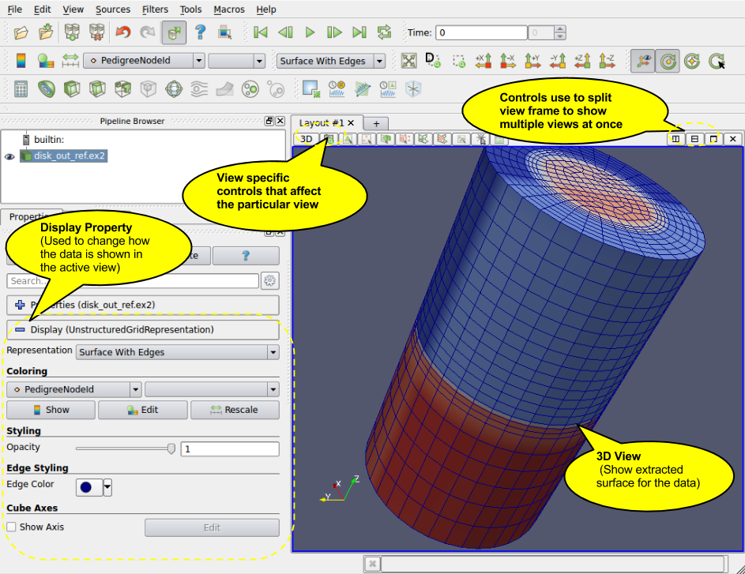
Figure 4.1 ParaView view screenThere may be parameters that are available to the user that control how the data is displayed e.g. in case of 3D view, the data can be displayed as wireframes or surfaces, where the user selects the color of the surface or uses a scalar for coloring etc. All these options are known as Display properties and are accessible from the Display tab in the Object Inspector.
Since there can be multiple datasets shown in a view, as well as multiple views, the Display tabs shows the properties for the active pipeline object (changed by using the Pipeline Browser, for example) in the active view.
ParaView supports showing multiple views side by side. To create multiple views, use the controls in the top right corner of the view to split the frame vertically or horizontally. You can also maximize a particular view to temporarily hide other views. Once a view-frame is split, you will see a list of buttons showing the different types of views that you can create to place in that view. Simply click the button to create the view of your choice.
You can swap view position by dragging the title bar for a view frame and dropping it into the title bar for another view.
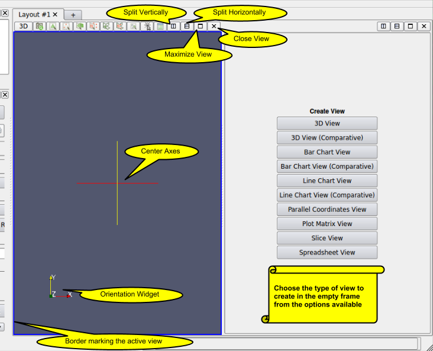
Figure 4.2 View options in ParaViewStarting with ParaView 3.14, users can create multiple tabs to hold a grid of views. When in tile-display mode, only the active tab is shown on the tile-display. Thus, this can be used as a easy mechanism for switching views shown on a tile display for presentations.
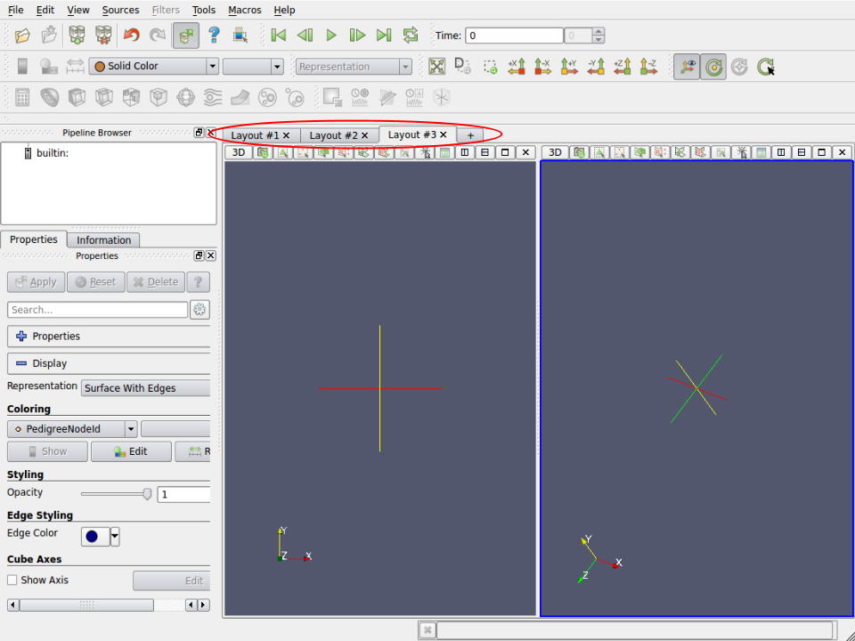
Figure 4.3 Multiple Tabs for laying out views in ParaViewSome filters, such as Plot Over Line may automatically split the view frame and show the data in a particular type of view suitable for the data generated by the filter.
Once you have multiple views, the active view is indicated by a colored border around the view frame. Several menus as well as toolbar buttons affect the active view alone. Additionally, they may become enabled/disabled based on whether that corresponding action is supported by the active view.
The Display tab affects the active view. Similarly, the eye icon in the Pipeline Browser, next to the pipeline objects, indicates the visibility state for that object in the active view.
When a new filter, source or reader is created, if possible it will be displayed by default in the active view, otherwise, if will create a new view.
Types of Views
This section covers the different types of views available in ParaView. For each view, we will talk about the controls available to change the view parameters using View Settings as well as the parameters associated with the Display Tab for showing data in that view.
3D view is used to show the surface or volume rendering for the data in a 3D world. This is the most commonly used view type.
When running in client-server mode, 3D view can render data either by bringing the geometry to the client and then rendering it there or by rendering it on the server (possibly in parallel) and then delivering the composited images to the client. Refer to the Client-Server Visualization chapter for details.
This view can also be used to visualize 2D dataset by switching its interaction mode to the 2D mode. This can be achieved by clicking on the button labelled "3D" in the view local toolbar. The label will automatically turn to 2D and the 2D interaction will be used as well as parallel projection.
Interacting with the 3D view will typically update the camera. This makes it possible to explore the visualization scene. The default buttons are shown in Table 4.1 and they can be changed using the Application Settings dialog.
Table 4.1|
Modifier |
Left Button |
Middle Button |
Right Button |
|
Rotate |
Pan |
Zoom |
|
|
Shift |
Roll |
Rotate |
Pan |
|
Control |
Zoom |
Rotate |
Zoom |
This view can dynamically switch to a 2D mode and follow the interaction shown in Table 4.2 and they can be changed using the Application Settings dialog.
Table 4.2|
Modifier |
Left Button |
Middle Button |
Right Button |
|
Pan |
Pan |
Zoom |
|
|
Shift |
Zoom |
Zoom |
Zoom |
|
Control |
Zoom |
Zoom |
Pan |
This view supports selection. You can select cells or points either on the surface or those within a frustum. Selecting cells or points makes it possible to extract those for further inspection or to label them. Details about data querying and selection can be found the Quantitative analysis chapter.
The View Settings dialog is accessible through the Edit | View Settings menu or the tool button in the left corner of the view can be used to change the view settings per view.
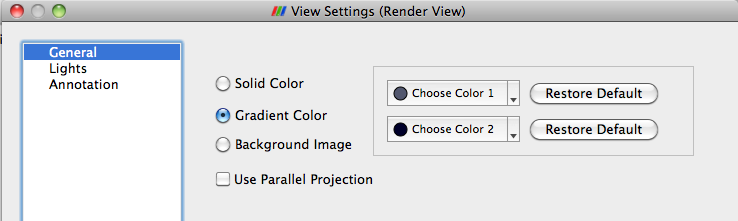
Figure 4.4 General tab in the View Settings menuThe General tab allows the user to choose the background color. You can use a solid color, gradient or a background image.
By default the camera uses perspective projection. To switch to parallel projection, check the Use Parallel Projection checkbox in this panel.
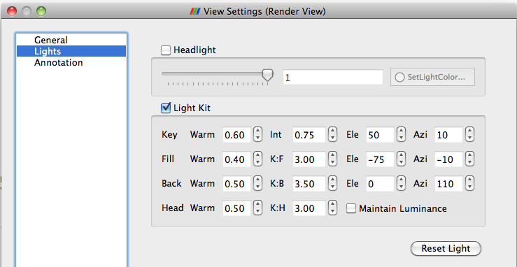
Figure 4.5 Lights tab in the View Settings menuThe 3D View requires lights to illumniate the geometry being rendered in the scene. You can control these lights using this pane.

The annotation pane enables control of the visibility of the center axes and the orientation widget. Users can also make the orientation widget interactive so that they can manually place the widget at location of their liking.
Users can control how the data from any source or filter is shown in this view using the Display tab. This section covers the various options available to a user for controlling appearance of the rendering in the 3D view.
The View menu has three options for controlling how the data is viewed. These are described in Table 4.3.

|
Name |
Usage |
|
Visible |
Checkbox used to toggle the visibility of the data in the view. If it disabled, it implies that the data cannot be shown in this view. |
|
Selectable |
Checkbox used to toggle whether the data gets selected when using the selection mechanism for selecting and sub-setting data. |
|
Zoom to Data |
Click this button to zoom the camera so that the dataset is completely fits within the viewport. |

The color group allows users to pick the scalar to color with or set a fixed solid color for the rendering. The options in Figure 4.8 are described in detail in Table 4.4
Table 4.4|
Name |
Usage |
|
Interpolate Scalars |
If selected, the scalars will be interpolated within polygons and the scalar mapping happens on a per pixel basis. If not selected, then color mapping happens at points and colors are interpolated which is typically less accurate. This only affects when coloring with point arrays and has no effect otherwise. This is disabled when coloring using a solid color. |
|
Map Scalars |
If the data array can be directly interpreted as colors, then you can uncheck this to not use any lookup table. Otherwise, when selected, a lookup table will be used to map scalars to colors. This is disabled when the array is not of a type that can be interpreted as colors (i.e. vtkUnsignedCharArray). |
|
Apply Texture |
This feature makes it possible to apply a texture over the surface. This requires that the data has texture coordinates. You can use filters like Texture Map to Sphere, Texture Map to Cylinder or Texture Map to Plane to generate texture coordinates when they are not present in the data. To load a texture, select Load from the combo box which will pop up a dialog allowing you to choose an image. Otherwise, select from already loaded textures listed in the combo box. |
|
Color By |
This feature enables coloring of the surface/volume. Either choose the array to color with or set the solid color to use. When volume rendering, solid coloring is not possible, you must choose the data array to volume render with. |
|
Set solid color |
Used to set the solid color. This is available only when Color By is set to use Solid Color. ParaView defines a notion of a color palette consisting of different color categories. To choose a color from one of these predefined categories, click the arrow next to this button. It will open up a drop down with options to choose from. If you use a color from the palette, it is possible to globally change the color by changing the color palette e.g. for printing or for display on screen etc. |
|
Edit Color Map... |
You can edit the color map or lookup table by clicking the Edit Color Map button. It is only shown when an array is chosen in the Color By combo-box. |
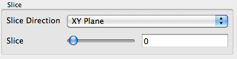
Figure 4.9 Slice optionsThe slice controls are available only for image datasets (uniform rectilinear grids) when the representation type is Slice. The representation type is controlled using the Style group on the Display tab. These allow the user to pick the slice direction as well as the slice offset.
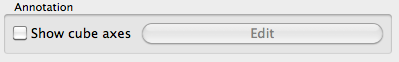
Figure 4.10 Annotation optionsCube axes is an annotation box that can be used to show a scale around the dataset. Use the Show cube axes checkbox to toggle its visibility. You can further control the apperance of the cube axes by clicking Edit once the cube-axes is visible.

Figure 4.12 shows the Style dialog box. The options in this dialog box are described in detail in Table 4.5 below.
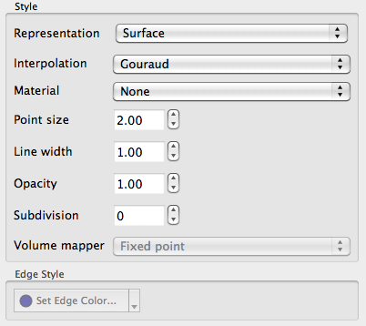
Figure 4.12 Sytle dialog box'Table 4.5|
Name |
Usage |
|
Representation |
Use this to change how the data is represented i.e. as a surface, volume, wireframe, points, or surface with edges. |
|
Interpolation |
Choose the method used to shade the geometry and interpolate point attributes. |
|
Point Size |
If your dataset contains points or vertices, this adjusts the diameter of the rendered points. It also affects the point size when Representation is Points. |
|
Line width |
If your dataset contains lines or edges, this scale adjusts the width of the rendered lines. It also affects the rendered line width when Representation is Wireframe or Surface With Edges. |
|
Opacity |
Set the opacity of the dataset's geometry. ParaView uses hardware-assisted depth peeling, whenever possible, to remove artifacts due to incorrect sorting order of rendered primitives. |
|
Volume Mapper |
When Representation is Volume, this combo box allows the user to choose a specific volume rendering technique. The techniques available change based on the type of the dataset. |
|
Set Edge Color |
This is available when Representation is Surface with Edges. It allows the user to pick the color to use for the edges rendered over the surface. |

The Backface Style dialog box allows the user to define backface properties. In computer graphics, backface refers to the face of a geometric primitive with the normal point away from the camera. Users can choose to hide the backface or front face, or specify different characteristics for the two faces using these settings.

These settings allow the user to transform the rendered geometry, without actually transforming the data. Note that since this transformation happens during rendering, any filters that you apply to this data source will still be working on the original, untransformed data. Use the Transform filter if you want to transform the data instead.
This view does not exist anymore as it has been replaced by a more flexible 3D view that can switch from a 3D to 2D mode dynamically. For more information, please see the 3D view section.
Spreadsheet View is used to inspect the raw data in a spreadsheet. When running in client-server mode, to avoid delivering the entire dataset to the client for displaying in the spreadsheet (since the data can be very large), this view streams only visible chunks of the data to the client. As the user scrolls around the spreadsheet, new data chunks are fetched.
Unlike some other views, this view can only show one dataset at a time. For composite datasets, it shows only one block at a time. You can select the block to show using the Display tab.
In regards to usability, this view behaves like typical spreadsheets shown in applications like Microsoft Excel or Apple Pages:
-
You can scroll up and down to inspect new rows.
-
You can sort any column by clicking on the header for the column. Repeated clicking on the column header toggles the sorting order. When running in parallel, ParaView uses sophisticated parallel sorting algorithms to avoid memory and communication overheads to sort large, distributed datasets.
-
You can double-click on a column header to toggle a mode in which only that column is visible. This reduces clutter when you are interested in a single attribute array.
-
You can click on rows to select the corresponding elements i.e. cells or points. This is not available when in "Show selected only mode." Also, when you create a selection in other views e.g. the 3D view, the rows corresponding to the selected elements will be highlighted.
Unlike other views, Spreadsheet View has a header. This header provides quick access to some of the commonly used functionality in this view.
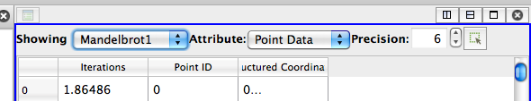
Figure 4.17 Spreadsheet View HeaderSince this view can only show one dataset at a time, you can quickly choose the dataset to show using the Showing combo box. You can choose the attribute type i.e. point attributes, cell attributes, to display using the Attribute combo box. The Precision option controls the number of digits to show after decimal point for floating point numbers. Lastly, the last button allows the user to enter the view in a mode where it only shows the selected rows. This is useful when you create a selection using another view such as the 3D view and want to inspect the details for the selected cells or points.
Currently, no user settable settings are available for this view.

The display properties for this view provide the same functionality as the header. Additionally, when dealing with composite datasets, the display tab shows a widget allowing the user to choose the block to display in the view.
A traditional 2D line plot is often the best option to show trends in small quantities of data. A line plot is also a good choice to examine relationships between different data values that vary over the same domain.
Any reader, source, or filter that produces plottable data can be displayed in an XY plot view. ParaView stores its plotable data in a table (vtkTable). Using the display properties, users can choose which columns in the table must be plotted on the X and Y axes.
As with the other view types, what is displayed in the active XY plot view is displayed by and controllable with the eye icons in the Pipeline Browser panel. When an XY plot view is active, only those filters that produce plotable output have eye icons.
The XY plot view is the preferred view type for the Plot over Line, Plot Point over Time, Plot Cell over Time, Plot Field Variable over Time, and Probe Location over Time filters. Creating any one of these filters will automatically create an XY plot view for displaying its output. Figure 4.19 shows a plot of the data values within a volume as they vary along three separate paths. The top curve comes from the line running across the center of the volume, where the largest values lie. The other two curves come from lines running near the edges of the volume.
Unlike the 3D and 2D render view, the charting views are client-side views i.e. they deliver the data to be plotted to the client. Hence ParaView only allows results from some standard filters such as Plot over Line in the line chart view by default. However it is also possible to plot cell or point data arrays for any dataset by apply the Plot Data filter.

The line chart view supports the following interaction modes:
-
Right-click and drag to pan
-
Left-click and drag to select
-
Middle-click and drag to zoom to region drawn.
-
Hover over any line in the plot to see the details for the data at that location.
To reset the view, use the Reset Camera button in the Camera Toolbar.
The View Settings for Line Chart enable the user to control the appearance of the chart including titles, axes positions etc. There are several pages available in this dialog. The General page controls the overall appearance of the chart, while the other pages controls the appearance of each of the axes.
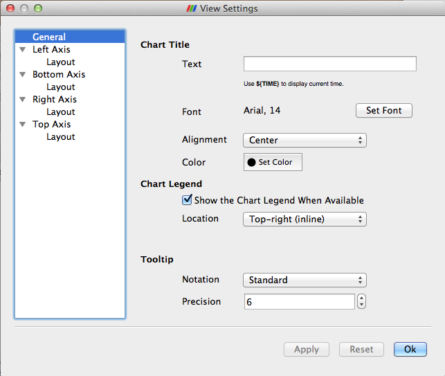
Figure 4.20 General Settings panelThis page allows users to edit settings not related to any of the axes.
Specify the text and characteristics (such as color, font) for the title for the entire chart. To show the current animation time in the title text, simply use the keyword ${TIME}.
When data is plotted in the view, ParaView shows a legend. Users can change the location for the legend.
Specify the data formatting for the hover tooltips. The default Standard switches between scientific and fixed point notations based on the data values.
On this page you can change the properties of a particular axis. Four pages are provided for each of the axes. By clicking on the name of the axis, you can access the settings page for the corresponding axes.
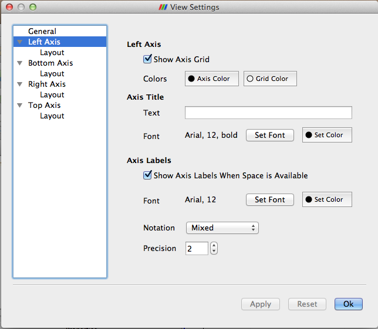
Figure 4.21 Axis Settings panel-
Show Axis Grid: controls whether a grid is to be drawn perpendicular to this axis
-
Colors: controls the axis and the grid color
Users can choose a title text and its appearance for the selected axis.
Axis labels refers to the labels drawn at tick marks along the axis. Users can control whether the labels are rendered and their appearance including color, font and formatting. User can control the locations at which the labels are rendered on the Layout page for the axis.
-
Show Axis Labels When Space is Available : controls label visibility along this axis
-
Font and Color: controls the label font and color
-
Notation: allows user to choose between Mixed, Scientific and Fixed point notations for numbers
-
Precision: controls precision after '.' in Scientific and Fixed notations
This page allows the user to change the axis range as well as label locations for the axis.
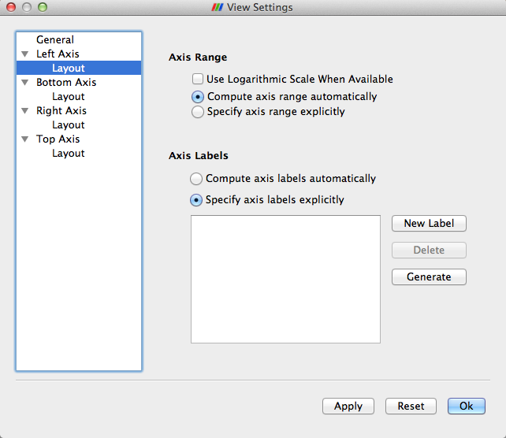
Figure 4.22 Axis Layout panelControls how the data is plotted along this axis.
-
Use Logarithmic Scale When Available: Check this to use a log scale unless the data contains numbers <= 0.
-
Compute axis range automatically: Select this button to let the chart use the optimal range and spacing for this axis. The chart will adjust the range automatically every time the data displayed in the view changes.
-
Specify axis range explicitly: Select this button to specify the axis range explicitly. When selected, user can enter the minimum and maximum value for the axis. The range will not change even when the data displayed in the view changes. However, if the user manually interacts with the view (i.e. pans, or zooms), then the range specified is updated based on the user's interactions.
Controls how the labels are rendered along this axis. Users can control the labeling independently of the axis range.
-
Compute axis labels automatically: Select this button to let the chart pick label locations optimally based on the viewport size and axis range.
-
Specify axis labels explicitly: Select this button to explicitly specify the data values at which labels should be drawn.
Display Properties for the Line Chart view allow the user to choose what arrays are plotted along which of the axes and the appearance for each of the lines such as its color, thickness and style.

-
Attribute Mode: pick which attribute arrays to plot i.e. point arrays, cell arrays, etc.
-
X Axis Data: controls the array to use as the X axis.
-
Use Array Index From Y Axis Data: when checked, results in ParaView using the index in data-array are plotted on Y as the X axis.
-
Use Data Array: when checked the user can pick an array to be interpreted as the X coordinate.
-
-
Line Series: controls the properties of each of the arrays plotted along the Y axis.
-
Variable: check the variable to be plotted.
-
Legend Name: click to change the name used in the legend for this array.
-
Select any of the series in the list to change following properties for that series. You can select multiple entries to change multiple series.
-
Line Color: controls the color for the series.
-
Line Thickness: controls the thickness for the series.
-
Line Style: controls the style for the line.
-
Marker Style: controls the style used for those markers, which can be placed at every data point.
Traditional 2D graphs present some types of information much more readily than 3D renderings do; they are usually the best choice for displaying one and two dimensional data. The bar chart view is very useful for examining the relative quantities of different values within data, for example.
The bar chart view is used most frequently to display the output of the histogram filter. This filter divides the range of a component of a specified array from the input data set into a specified number of bins, producing a simple sequence of the number of values in the range of each bin. A bar chart is the natural choice for displaying this type of data. In fact, the bar chart view is the preferred view type for the histogram filter. Filters that have a preferred view type will create a view of the preferred type whenever they are instantiated.
When the new view is created for the histogram filter, the pre-existing 3D view is made smaller to make space for the new chart view. The chart view then becomes the active view, which is denoted with a red border around the view in the display area. Clicking on any view window makes it the active view. The contents of the Object Inspector and Pipeline Browser panels change and menu items are enabled or disabled whenever a different view becomes active to reflect the active view’s settings and available controls. In this way, you can independently control numerous views. Simply make a view active, and then use the rest of the GUI to change it. By default, the changes you make will only affect the active view.
As with the 3D View, the visibility of different datasets within a bar chart view is displayed and controlled by the eye icons in the Pipeline Browser. The bar chart view can only display datasets that contain chartable data, and when a bar chart view is active, the Pipeline Browser will only display the eye icon next to those datasets that can be charted.
ParaView stores its chartable data in 1D Rectilinear Grids, where the X locations of the grid contain the bin boundaries, and the cell data contain the counts within each bin. Any source or filter that produces data in this format can be displayed in the bar chart view. Figure 4.25 shows a histogram of the values from a slice of a data set.
The Edit View Options for chart views dialog allows you to create labels, titles, and legends for the chart and to control the range and scaling of each axis.
The Interaction, Display Properties as well as View Settings for this view and similar to those for the Line Chart.
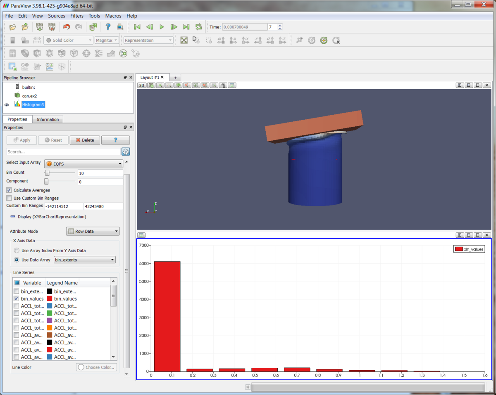
Figure 4.25 Histogram of values from a slice of a datasetThe new Plot-Matrix-View (PMV) allows visualization of multiple dimensions of your data in one compact form. It also allows you to spot patterns in the small scatter plots, change focus to those plots of interest and perform basic selection. It is still at an early stage, but the basic features should already be useable, including iterative selection for all charts (add, remove and toggle selections with Ctrl or Shift modifiers on mouse actions too).
The PMV can be used to manage the array of plots and the vtkTable mapping of columns to input of the charts. Any filters or sources with an output of vtkTable type should be able to use the view type to display their output. The PMV include a scatter plot, which consists of charts generated by plotting all vtkTable columns against each other, bar charts (histograms) of vtkTable columns, and an active plot which shows the active chart that is selected in the scatter plot. The view offer offers new selection interactions to the charts, which will be describe below in details.
As with the other view types, what is displayed in the active PMV is displayed by and controllable with the eye icons in the Pipeline Browser panel. Like XY chart views, the PMVs are also client-side views i.e. they deliver the data to be plotted to the client.
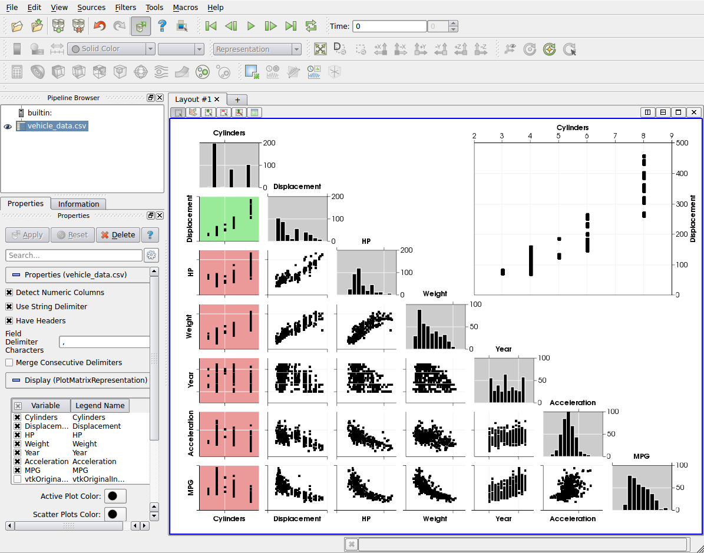
Plot Matrix View Plots of data values in a vtkTableThe scatter plot does not support direct user interactions on its charts, except click. When clicking any charts within the scatter plot, the active plot (The big chart in the top right corner) will be updated to show the selected chart and user can interact with the big chart as described below.
The Active Plot in PMV supports the following interaction modes: By default,
-
Left-click and drag to pan
-
Middle-button to zoom
-
Hover over any point in the plot to see the details for the data at that location.
There are also four type of selection mode will change the default user interactions. These mode can be invoked by clicking one the buttons shown at the top left corner of the PMV window, where the "View Setting" and camera buttons are.
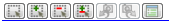
Selection Modes-
Start Selection will make Left-click and drag to select
-
Add selection will select and add to current selection
-
Subtract selection will subtract from current selection
-
Toggle selection will toggle current selection
The View Settings for PMV enable the user to control the appearance of the PMV including titles of the active plot, the plot/histogram colors, the border margin and gutter size of the scatter plot, etc. There are several pages available in this dialog. The General page controls the overall appearance of the chart, while the other pages controls the appearance of other of each plot types.
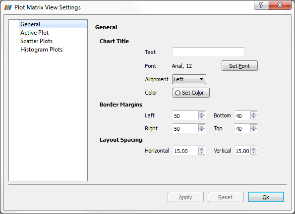
Plot Matrix View General SettingsThis page allows users to change the title, border margins and layout spacings. To show the current animation time in the title text, simply use the keyword ${TIME}. Users can further change the font and alignment for the title.
On this page you can change the properties of the axis, grid color, background color, and tooltips properties for the active plot.

This page allows the user to change the same settings as the Active Plot, and also color for selected charts.
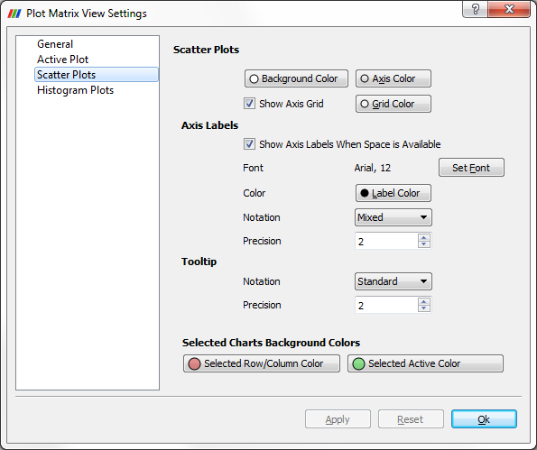
Plot Matrix View Scatter Plot Settings-
Selected Row/Column Color is for the charts has the same row or column as the selected chart.
-
Selected Active Color is for the selected chart.
This page also allows the user to change the same settings as the active plot for the histogram plots.
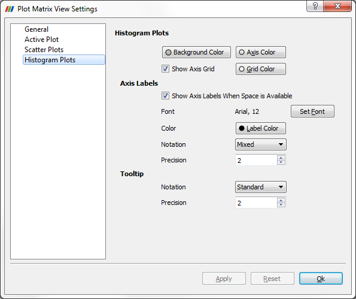
Plot Matrix View Histogram Plots SettingsDisplay Properties for the PMV allow the user to choose what arrays are plotted and some appearance properties for each type of the plots, such as their color, marker size, and marker style.

The point selections made in the Active Plot (top right chart) will be displayed in the bottom left triangle (scatter plots). Also, the selection is linked with other view types too.
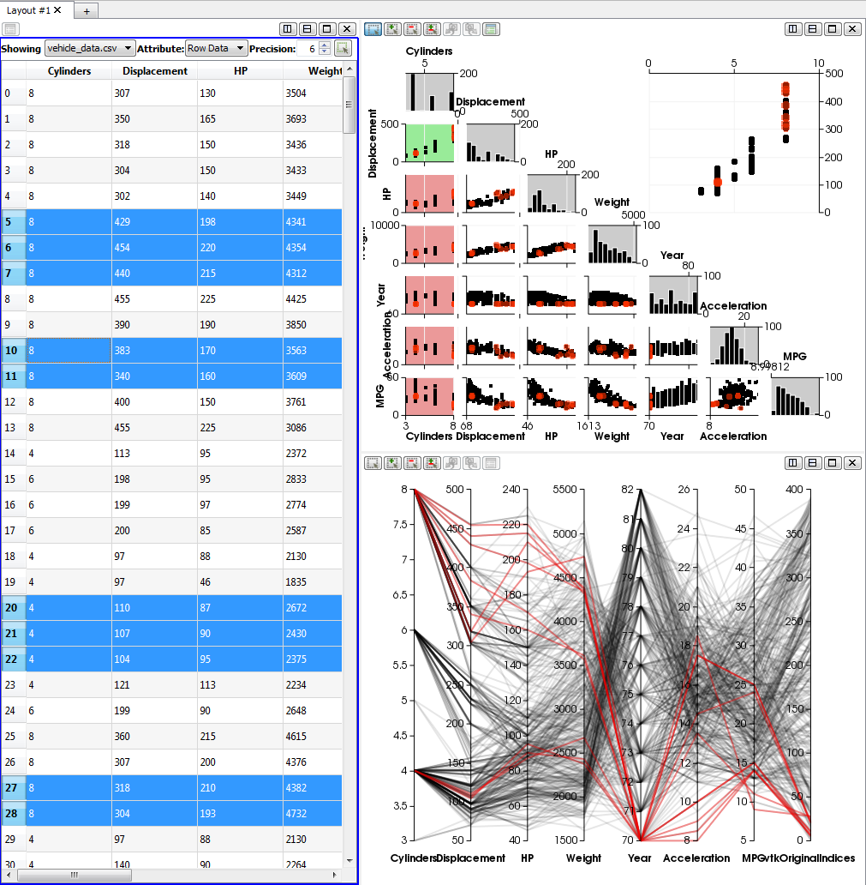
Plot Matrix View Linked SelectionThe Slice View allow the user to slice along the three axis (X,Y,Z) any data that get shown into it. The range of the scale for each axis automatically update to fit the bounding box of the data that is shown. By default no slice is created and the user will face as a first step just an empty Outline representation.
-
In order to Add a new slice along an axis, just double click between the axis and the 3D view for the axis you are interested in at the position you want.
-
To Remove a slice, double click on the triangle that represent that slice on a given axis.
-
To toggle the 'Visibility of a slice, right click on the triangle that represent that slice on a given axis.

A video going over its usage can be seen at the following address: https://vimeo.com/50316342
The Slice View can easily be managed through Python. To do so, you will need to get a reference to the view proxy and then you will be able to change the slice location of the representations that are shown in the view by just changing the property for each axis. The following code snippet illustrate a usage through the Python shell inside ParaView.
> multiSliceView = GetRenderView()> Wavelet()> Show()> multiSliceView.XSlicesValues = [-2.5, -2, -1, 0, 5]> multiSliceView.YSlicesValues = range(-10,10,2)> multiSliceView.ZSlicesValues = []> Render()
Moreover, from Python you can even change slice origins and normals. Here is the list of property that you can change with their default values:
-
XSlicesNormal = [1,0,0]
-
XSlicesOrigin = [0,0,0]
-
XSlicesValues = []
-
YSlicesNormal = [0,1,0]
-
YSlicesOrigin = [0,0,0]
-
YSlicesValues = []
-
ZSlicesNormal = [0,0,1]
-
ZSlicesOrigin = [0,0,0]
-
ZSlicesValues = []
The Python integration can be seen in video here: https://vimeo.com/50316542
The Quad View come from a plugin that is provided along with ParaView. That view allow the user to slice along 3 planes any data that get shown into it. A point widget is used to represent the planes intersection across all the view and can be grabbed and moved regardless the view we are interacting with. Information such as intersection position for each axis is represented with a text label in each of the slice view. The slice views behave as 2D views by providing pan and zoom interaction as well as parallel projection. In the bottom-right quarter there is a regular 3D view that can contains the objects that are sliced but this object can be shown using a regular representations or the "Slices" one which will show an Outline with the corresponding 3 cuts inside it.

A video going over its usage can be seen at the following address: http://vimeo.com/50320103 That view also provide a dedicated option panel that allow the user to customize the cutting plane normals as well as the view up of the slice views. Moreover, the slice origin can be manually entered in that panel for greater precision.
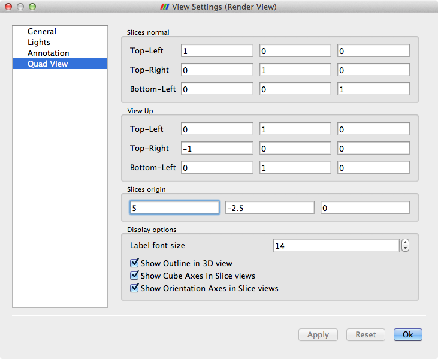
Quad View Option PanelThe Quad View can easily be managed through Python. To do so, you will need to get a reference to the view proxy and then you will be able to change the slice location of the representations that are shown in the view by just changing the view properties. The following code snippet illustrate a usage through the Python shell inside ParaView.
> quadView = GetRenderView()> Wavelet()> Show()> quadView.SlicesCenter = [1,2,3]> Render()
Moreover, from Python you can change also the slice normals. Here is the list of property that you can change with their default values:
-
SlicesCenter = [0,0,0]
-
TopLeftViewUp = [0,1,0]
-
TopRightViewUp = [-1,0,0]
-
BottomLeftViewUp = [0,1,0]
-
XSlicesNormal = [1,0,0]
-
XSlicesValues = [0]
-
YSlicesNormal = [0,1,0]
-
YSlicesValues = [0]
-
ZSlicesNormal = [0,0,1]
-
ZSlicesValues = [0]
And the layout is as follow:
-
TopLeft = X
-
TopRight = Y
-
BottomLeft = Z
The interface for changing the color mapping and properties of the scalar bar is accessible from the Display tab of the Object Inspector. Pressing the Edit Color Map button displays the interface for manipulating the color map and scalar bar. The UI of Color Scale Editor as been both simplified and improved in many way. The first time the Color Editor get shown, it will appear in its simple mode which appears to be enough for most ParaView users. Although, in order to get full control on the Color Mapping in ParaView, you will need to select the Advanced checkbox. For volume representation, the UI was fully revisited for a better management but for other type of representations, the color editor is pretty much the same except that some buttons are rearranged and there are two more UI components added. The status of the Advanced checkbox is kept into ParaView internal settings therefore the next time you get back to the Color Editor it will allow come back the way you use it.
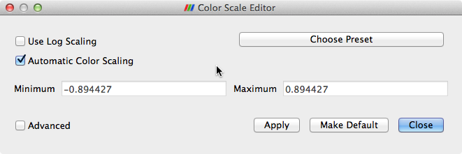
Simplified Color Editor

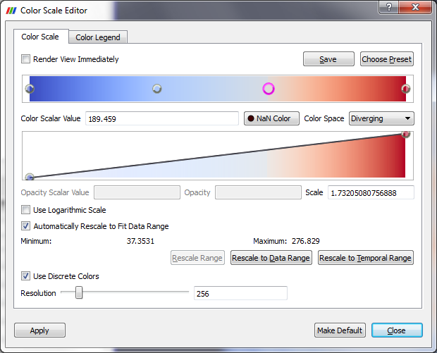
Advanced Volume Color EditorThe two new UI controls are "Render View Immediately" checkbox and "Apply" button so that users can have control whether the render views should be updated immediately while editing the color transfer functions. This is very helpful when working with very large dataset.
The main changes for the color editor is the separation of editing opacity function from the color-editing function for volume representation. For surface representation, only one color-editing widget will show up (see screenshot "Surface Color Editor"), which is essentially the same as before. The scalar range of this color map editor is shown below the Automatically Rescale to Fit Data Range check box. The leftmost sphere corresponds to the minimum scalar value, and the rightmost one corresponds to the maximum. Any interior nodes correspond to values between these two extremes. New nodes may be added to the color editor by left-clicking in the editor; this determines the scalar value associated with the node, but that value may be changed by typing a new value in the Scalar Value text box below the color map editor or by clicking and dragging a node. The scalar value for a particular node may not be changed such that it is less than that for a node left of it or greater than that for a node right of it.
When volume rendering (see screenshot "Volume Color Editor", two function-editing widgets will show up: the top color-editing widget behave the same as for surface representation, which is used for editing scalar colors; the second one is the new opacity-editing widget for editing opacity only. The vertical height of a node indicates its opacity. Also, as in the color-editing widget, the leftmost sphere corresponds to the minimum scalar value, and the rightmost one corresponds to the maximum. Any interior nodes correspond to values between these two extremes. Again, new nodes may be added to the opacity-editor by left-clicking in the editor; this determines the scalar value associated with the node, but that value may be changed by typing a new value in the Scalar Value text box below the opacity editor or by clicking and dragging a node. Some new features are added to edit the opacity function (see below screenshot "Opacity Function Editor", which is the same editor as "Volume Color Editor", but resized vertically to have more space to show the opacity-editor)

When a node is double-clicked in the opacity editor, four green handle widgets will be displayed based on the middle point position and curve sharpness between this node and the nodes before and after it. When the mouse is moved over the green sphere handle, it will become active (its center changes to magenta color) and can be dragged to adjust the middle point position (horizontal handle) or curve sharpness (vertical handle). To exit this mode, just click on another node.
When a node in the color-editor is clicked, it becomes highlighted (i.e., drawn larger than the other spheres in the editor). In the "Volume Color Editor" above, the third node from the left has been selected. Clicking again on the selected node displays a color selector from which you may select a new color for the node. The new color will also be applied to the opacity-editor. Pressing the ‘d’ or Delete key while a node is selected removes that node from the color-editor. Only the endpoint nodes may not be deleted. The same is true for removing nodes from opacity-editor.
For surface rendering, opacity is determined for an entire data set, not based on the underlying scalar values.
Below the color-editor is a text box for changing the scalar value associated with a given node. Only the scalar value is associated with surface rendering. The scalar values at the endpoints may only be changed if the Automatically Rescale to Fit Data Range check box (discussed later in this section) is unmarked. When volume rendering, there are a set of three text boxes below opacity-editor that you may specify the scalar value, its opacity and scale per node in the editor for the selected node. In volume rendering, the opacity is accumulated as you step through the volume being rendered. The Scale value determines the unit distance over which the opacity is accumulated.
There are also controls to specify the color space and any color map preset you wish to save or use. The color spaces available are RGB (red, green, blue), HSV (hue, saturation, value), Wrapped HSV, and CIELAB (a more perceptually linear color space). The color space determines how the colors are interpolated between specified values; the colors at the color map (or transfer function) editor nodes will remain the same regardless of the color space chosen. If wrapped HSV is used, the interpolation will use the shortest path in hue, even going through the value hue = 0. For non-wrapped HSV, the hue interpolation will not pass through 0. A hue of zero sets the color to red.
In addition to choosing the color space and modifying the color map or transfer function nodes, you may also create and load preset color scales. When volume rendering, only the color map is stored; the scalar-to-opacity mapping is not. To store your current settings as a preset, click the Save button. In the dialog box that appears, you may enter a name for your new preset. By default, the scalar values from the data array being used are stored in the preset. If you wish these values to be normalized between 0 and 1, press the Normalize button.

Any presets you save, in addition to the default ones provided by ParaView, are available by pressing the Choose Preset button, causing the dialog shown below to be displayed. Selecting a preset and clicking OK causes the current color map to be set to the chosen preset. Any user-defined presets may be normalized (as discussed above) or removed from the list of presets entirely using the Normalize and Remove buttons, respectively. The default presets are already normalized and may not be removed from the application.
Any of the color scale presets may be exported to a file using the Export button in the above dialog. The resulting file(s) may then be copied to another computer for use with ParaView on a different machine. In order to load presets that are stored in such files, press the Import button on the above dialog, and navigate to the desired color preset file.
If the current dataset is colored by an array of vectors, the Component menu will be enabled. It determines whether the data is colored by a single vector component (X, Y, or Z) or by the vector’s Magnitude (the default). If the data is colored by a single-component (scalar) array, then the Component menu is disabled.
If Use Logarithmic Scale is checked, then instead of the scalar values in the data array being used directly to determine the colors, the base-10 logarithm of the data array values is computed, and the resulting value is used for extracting a color from the color map. If the data array contains values for which a logarithm would produce invalid results (i.e., any values less than or equal to 0), the range for the color map is changed to [0, 10] so that the logarithm produces valid results.
By default, any data attribute that has been used to color a dataset currently loaded in ParaView, and whose name and number of components match that of the array selected in the Color by menu, contributes to the range of the color map. To change this behavior, first uncheck the Automatically Rescale to Fit Data Range check box. This ensures that the range of the color map is not reset when the range of the data attribute changes. The minimum and maximum values of the color map can be overridden by pressing the Rescale Range button, entering different Minimum and Maximum values in the dialog that appears, and pressing Rescale. This rescales all the nodes in the color map so that the scalar values lie at the same normalized positions. Alternatively, you may modify the scalar values of any node (including the endpoints if Automatically Rescale to Fit Data Range is off) by clicking a node to highlight it and typing a new value in the Scalar Value entry box. By changing the minimum and maximum color map values, it is possible to manually specify what range of data values the color map will cover. Pressing the Rescale to Data Range button on the Color Scale tab of the Color Scale Editor sets the range to cover only the current data set.
If Use Discrete Colors is checked, the Resolution slider at the bottom of the dialog specifies the number of colors to use in the color map. The scale ranges from 2 to 256 (the default). The fewer the number of colors, the larger the range each color covers. This is useful if the data attribute has a small number of distinct values or if larger ranges of the array values should be mapped to the same color.

This is an abridged version of the ParaView User's Manual. For a regularly updated version of the manual, refer to the ParaView Wiki (Manual)